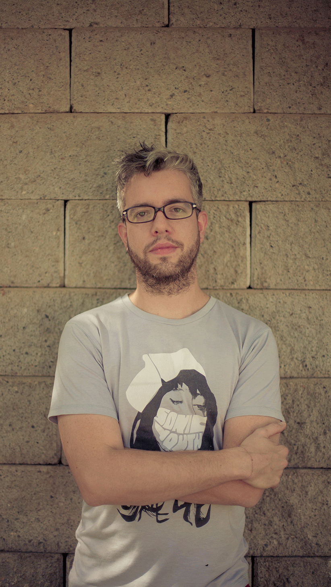

Hola! Soy Carlos Bleycher, guionista, editor y asesor de contenido.
Hace 12 años me dedico a escribir comedia. Partí en sitcoms y luego me especialicé en animación y contenido infantil. En los últimos 6 años fui jefe de contenidos y guiones de la productora de animación Zumbastico Studios.
Producciones animadas que han tenido mi jefatura de guión como “Zumbástico Fantástico”, “Horacio & Los Plasticines”, “Hostal Morrison” y “Puerto Papel” han sido transmitidas - y están al aire actualmente - en cadenas de T.V internacionales como Cartoon Network (LA), Gloob (Brasil), Paka-Paka (Argentina), Señal Colombia, HBO (Sudeste Asiático), ABC (Australia), Sony (India) y Netflix.
“Puerto Papel” (“Paper Port”/“Porto Papel”) ha sido galardonada con importantes premios de la industria audiovisual y de contenido infantil como los India Catalina en Colombia, Prix Jeunesse en Alemania y TAL, que premia lo mejor en televisión pública.
“Tienda de Mascotas” (“Cagemates”), serie animada original creada por mí, ganó el premio Disney Channel Prize de MIFA en el Festival Internacional de Cine de Animación de Annecy 2013, Francia.
He liderado la escritura de 5 series de animación, además de escribir, editar, crear, inventar, destrozar, re-escribir, asesorar y guionizar más de 10 shows de animación y comedia, desde pre escolares hasta contenido para adultos, micro-programas web y largometrajes.
Dicté el ramo “Narrativa Para Niños y Jóvenes" en la Universidad UNIACC (Chile) y fui invitado a desarrollar e impartir el workshop “El Guión Para La Animación” en el ICAIC, en La Habana, Cuba, junto a Gabriel Osorio.
Actualmente vivo en Barcelona.
